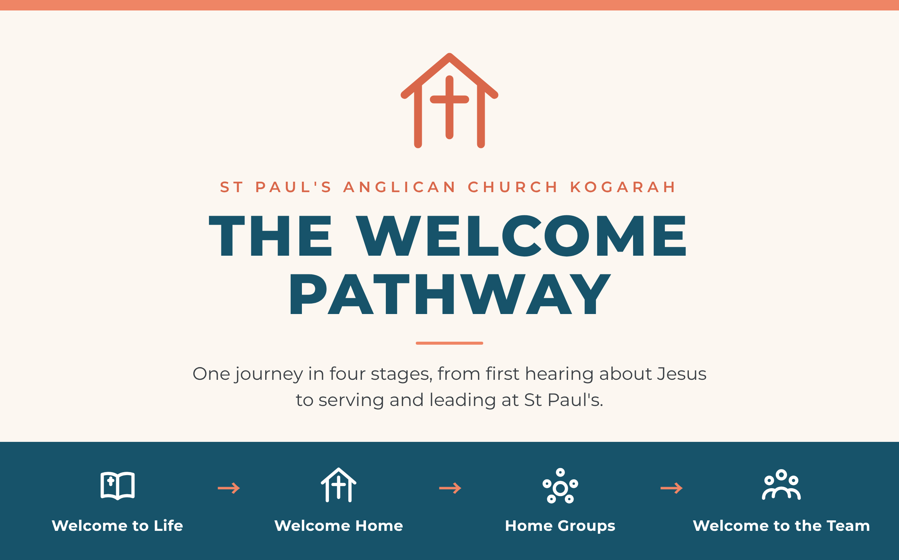
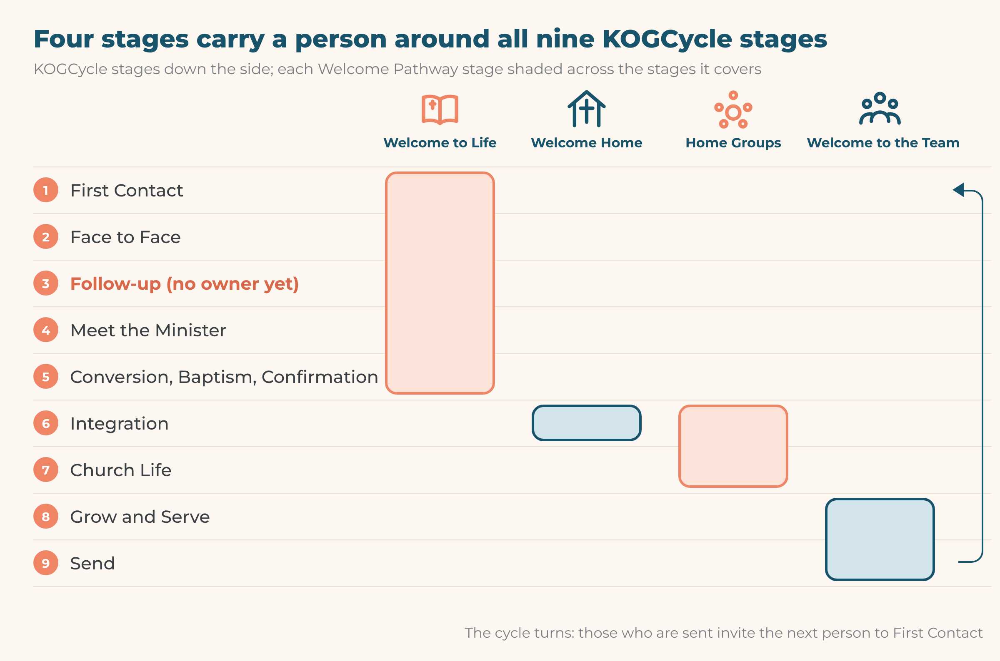
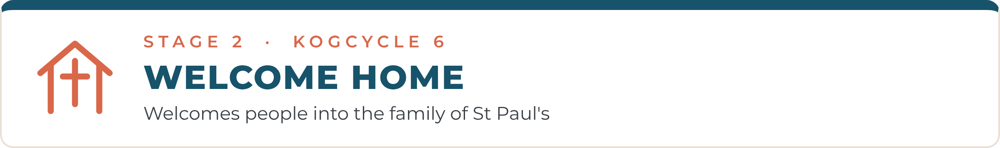
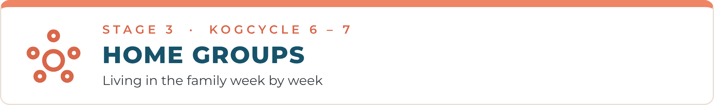
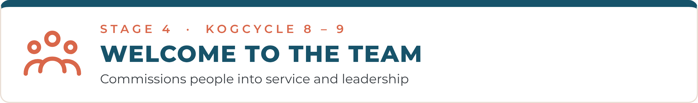

5 October 2026

The Welcome Pathway is one journey in four stages: Welcome to Life → Welcome Home → Home Groups → Welcome to the Team. It takes a person from first hearing about Jesus to serving and leading at St Paul's.
The Grow team agreed these names on 14 July 2026, and the leaders endorsed them. They replace the older, overlapping course names: Discovery, Partnership Course and Growth Groups. As we put it to the church: "We're not changing the groups, we're naming what they've always been: home."
The pathway is how people move around the KOGCycle, our nine-stage discipleship map from First Contact to Send. Every stage of the pathway sits on one or more KOGCycle stages, so the two always read together.
It serves our yearly goal of 75 households serving at Church by 31 December 2026, and our Horizons vision of 500 households across 10 congregations by 2035.
"From him the whole body, fitted and knit together by every supporting ligament, promotes the growth of the body for building itself up in love by the proper working of each individual part." Ephesians 4:16 (CSB)

Welcome Home and Home Groups overlap at Integration (stage 6): a person is matched to a Home Group while still on the Welcome Home course. Follow-up (stage 3) is the one KOGCycle stage with no one responsible for it yet.
Welcome to Life introduces enquirers to Jesus. It covers our evangelism, from the first conversation through to conversion, baptism and confirmation.
KOGCycle stages: 1 First Contact · 2 Face to Face · 3 Follow-up · 4 Meet the Minister · 5 Conversion, Baptism and Confirmation
Who it is for: newcomers, friends, family and anyone exploring the Christian faith.
What sits inside it:
The Discover Course. This is our main Welcome to Life course, and it explores the Christian faith. The next one begins Sunday 18 October 2026.
Outreach events that create first contact: Father's Day, Mid-Autumn Festival, the Christmas Concert.
Easy English class and our Sunday welcomers (Face to Face).
A visit from one of the ministers (Meet the Minister).
How a person moves through it:
They are invited to an event or a Sunday service (First Contact).
A welcomer meets them at the door and learns their name (Face to Face).
Someone contacts them within two days of their first visit (Follow-up).
A minister meets with them (Meet the Minister).
They are invited to the Discover Course.
Those who put their trust in Jesus are prepared for baptism or confirmation (Conversion, Baptism and Confirmation).
Moves on to: Welcome Home.

Welcome Home welcomes people into the family of St Paul's. Its course, Welcome Home, is the invitation to stop being a guest: "no longer foreigners and strangers, but fellow citizens with the saints, and members of God's household" (Ephesians 2:19).
KOGCycle stage: 6 Integration
Who it is for: new Christians coming out of Welcome to Life, Christians who are new to St Paul's, and regular attenders who have not yet done the course.
The course is three evenings, offered on two tracks, Friday or Sunday, 6:00 to 8:00pm. Each night is a meal, one talk and table conversation, with table hosts who stay with the same guests all three nights.
| Night | Question | Passage or focus |
|---|---|---|
| 1 | Who is this God, and what has he done? | Ephesians 2:1–10 |
| 2 | What kind of household is this? | Ephesians 2:11–22 |
| 3 | Where do you fit? | G7 teams, Home Groups, membership, baptism and confirmation |
The next course runs Friday 20 and 27 November and 4 December, or Sunday 22 and 29 November and 6 December. It is in English with Mandarin translation, children are cared for, and bookings are open on the Welcome Home booking page.
How a person moves through it:
A minister, table host or team leader invites them personally.
They come to all three nights on one track.
On night three they write down one G7 team and one Home Group.
Within seven days, the team leader they named contacts them, and they are matched to a Home Group before the year ends.
Moves on to: Home Groups.

Home Groups are where people live in God's family week by week. They read the Bible, pray, and care for one another. The name replaces "Growth Groups"; the groups themselves have not changed.
KOGCycle stages: 6 Integration · 7 Church Life
Who it is for: every partner of St Paul's, from KOGMini to the mid-week fellowships.
What a healthy Home Group looks like:
It meets in person regularly where possible.
It deliberately avoids becoming exclusive.
It is a safe place to share struggles and victories in Christ.
It disciples by example: "imitate me, as I imitate Christ".
Its leader raises the next leader (2 Timothy 2:2), co-leading first and then splitting.
How a person moves through it:
They join a group that suits their language, stage of life and availability.
The leader keeps in touch with them personally, not only through the group.
As they grow in faith and character, the leader encourages them to serve.
Care for those not yet in a group: some regular members are in extraordinary life situations. They are cared for pastorally, without pressure to join. Others are invited personally by name to a suitable group.
Moves on to: Welcome to the Team.

Welcome to the Team commissions people into service and leadership. It helps each partner discover the gifts God has given them and find their place on one of the G7 teams. It replaces the former "Discovery Course" in its giftedness sense.
KOGCycle stages: 8 Grow and Serve · 9 Send
Who it is for: partners who are settled in a Home Group and ready to serve, and servers being raised up as leaders.
What sits inside it:
The Welcome to the Team course, run in English and Chinese.
The Gifts Audit ("Gifts God's given to St Paul's Kogarah").
Placement on a G7 team: Go, Glorify, Grow, Gregarious, Giftedness, Glue or Governance.
Leaders' training on the 2 Timothy 2:2 principle.
How a person moves through it:
They complete the course and the gifts conversation.
They are placed on a G7 team and begin serving.
Those with leadership gifts are trained to lead, and to raise others.
Some are sent out to new ministries, congregations or mission (Send).
Then the cycle turns: those who serve invite the next person, and the pathway begins again at First Contact.
People fall out of a pathway at its handovers, not in its courses. So every handover has a named role responsible for it. The two-day Follow-up window is agreed; the other timings are proposals for the Grow team to confirm.
| Handover | KOGCycle | Responsible | Timing |
|---|---|---|---|
| First visit → personal contact | 2 → 3 | Unassigned (needs an owner) | Within 2 days of first visit |
| Contact → Meet the Minister | 3 → 4 | Rector and Assistant Minister | Within 2 weeks |
| Meet the Minister → Discover Course | 4 → 5 | Ministers | Next course intake |
| Discover Course → Welcome Home | 5 → 6 | Discover Course leader | At the course's last session |
| Welcome Home → Home Group | 6 | Welcome Home course leader | Before the course ends |
| Home Group → Welcome to the Team | 7 → 8 | Home Group leader | When the person is ready to serve |
| Welcome to the Team → G7 team | 8 | Giftedness team leader | At the course's end |
The gap: Follow-up (KOGCycle stage 3). We are good at meeting people and good at keeping people. But the two days after a first visit currently belong to nobody. This is the most urgent role to fill.
Team ownership: the Grow team oversees Welcome to Life, Welcome Home and Home Groups. The Giftedness team oversees Welcome to the Team.
Two of our four Q4 milestones are pathway milestones. They both serve the yearly goal of 75 households serving at Church by 31 December.
| Pathway stage | KOGCycle | Q4 milestone | Aim |
|---|---|---|---|
| Welcome to Life | 1, 5 | Discover Course, beginning Sunday 18 October | 5 people join |
| Welcome to Life | 1 | Christmas Concert, Sunday 13 December | Over 120 people come |
| Welcome to Life | 5 | Confirmation service, morning of 13 December | Those ready are confirmed |
| Welcome Home | 6 | Run at least one Welcome Home course | 4 households join |
| Home Groups | 6 | Invite the regular members not yet in a group, personally | Each matched to a group |
| Welcome to the Team | 8 | Recruit KOGKids and Youth assistants | 6 (3 so far) |
Earlier participation measures (from the Growth Groups overview): Welcome Home 17 of 23 (aim 70%); Discovery Course 8 of 23 (aim 50%); Home Group participation 73 of 80 including children (91%).
Use these names in every service sheet, Companion Booklet, slide, sign and email.
| Use | Not | Chinese (Traditional) |
|---|---|---|
| Welcome to Life | Christianity Explored, Life Course (as pathway names) | 「Welcome to Life」 (to confirm) |
| Discover Course, part of Welcome to Life | Discovery Course | 「探索」課程 |
| Welcome Home | Welcome to the Family, Partnership Course | 「歡迎回家」 (to confirm) |
| Home Groups | Growth Groups, growth group | 家庭小組 |
| Welcome to the Team | Discovery Course (giftedness) | to confirm |
Still to update:
KOGCycle poster: Stage 6 still reads "growth group + 121"
November Companion Booklet: replace "Welcome to the Family" in the milestones
Service slide templates and signage
Confirm the Chinese names for Welcome to Life, Welcome Home and Welcome to the Team